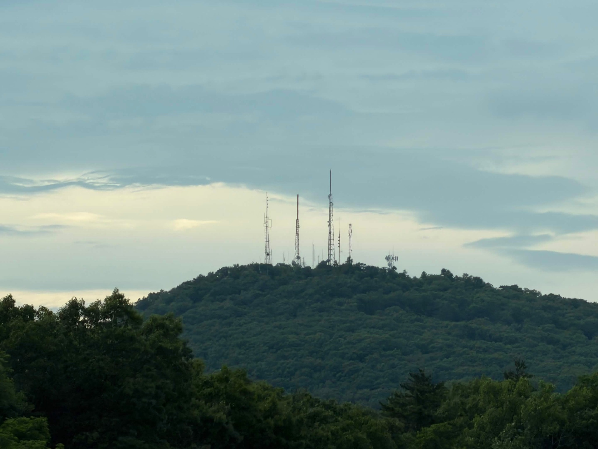

A local community effort for mesh networking, radio experimentation, field notes, and practical communications knowledge throughout Hampden County.

Hampden County Mesh is focused on practical communications knowledge for Western Massachusetts: local operators, local terrain, casual signal checks, and locally useful information.
The observer, hub, website, and guides are contributions to the broader local mesh and radio ecosystem. They are not the whole network, and they are not meant to replace independent operators or neighboring communities.
The goal is to help people learn what exists nearby, connect with other local operators, and build useful local communications knowledge together over time.
Learn About the CommunityNew to mesh networking or radio? Learn what Hampden County Mesh is, what equipment people use, and how to take a first step.
Open the guides →Take a MeshCore or Meshtastic device with you, see what it hears, and learn how local terrain affects real-world communications.
Learn how to start →Share what you noticed while checking a node, taking a walk, driving around, visiting a park, or trying a setup from somewhere new.
View coverage →Ask questions, compare setups, coordinate signal checks, and help build communications knowledge locally.
Join the community →Join local operators, ask questions, compare setups, share coverage notes, coordinate casual checks, and help build community-maintained communications knowledge.
Independent operators, beginners or experts, nearby communities, and people who are simply curious about radio or mesh networking are welcome.
Join DiscordQuestions, collaboration opportunities, coverage notes, local infrastructure ideas, or community partnerships?
HampdenCountyMesh@protonmail.com
We welcome radio operators, mesh users, observers, educators, makers, libraries, clubs, and organizations interested in helping people learn and connect around practical local communications.